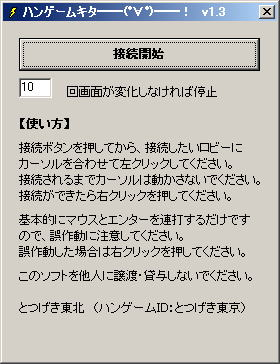
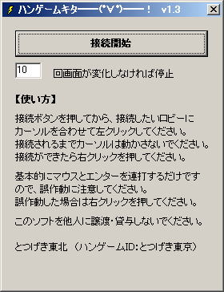

とつげき東北 TOP
動作環境：
WINDOWS95・WINDOWS98・WINDOWSNT・WINDOWSMe・WINDOWS2000・WINDOWSXp
開発環境：
Borland C++ Builder Professional Version5.0


紹介
ハンゲームキタ━━(ﾟ∀ﾟ)━━！（混雑時にハンゲームのロビーに接続を試行するツール）ｖ1.2
とつげき東北 TOP
動作環境：
WINDOWS95・WINDOWS98・WINDOWSNT・WINDOWSMe・WINDOWS2000・WINDOWSXp
開発環境：
Borland C++ Builder Professional Version5.0

紹介
そのままです。
混雑時にハンゲームでロビーに接続しても「満員で接続できません」と出ます。
友達とのせっかくの待ち合わせ、イライラするもの。ハンゲームの楽しみが半減してしまいます。
そこで、ハンゲームのロビーに接続を試行し続けるツールです。
基本的に、ハンゲームの各種ゲームで使えるよう、ソフト依存しないように作ってあります。
使い方
ボタンを押す。
接続したいロビーにカーソルをあわせてから左クリックをする。
接続されるまでは一切カーソル等を動かしたりせずただただ待つ。
接続されたら右クリックを押して機能を停止する。
カーソルが変なところに行aってしまったりしても、このツールはひたすらクリック連打を繰り返してしまうので、困ったらとりあえずマウスの右クリックをして動作をとめてください。
停止するまでの「回数」は初期値10となっています。
これは、画面が変化しなくなったときに、どの程度時間がたてば「接続完了した」と見なすかの値です。
小さくしておくと、接続完了した後にソフトがすぐに停止しますので、誤作動などが起きにくくなる反面、接続試行の段階で回線速度などが遅い場合には、接続が完了する前にソフトが停止してしまうこともあります。トイレなどに行く際、放置して接続させ続ける場合、20のように大きな値にしておくと良いでしょう。
ダウンロード
GoHanGame.exe
バージョン情報
1.0 初版
1.1 ハンゲームの接続画面以外であると思われる画面では動作を停止するように改良。
1.2 接続されたと思われる際などに動作を停止するように改良。
1.3 動作が停止するまでの時間（回数）を指定できるように修正。
著作権および利用規約
必ずお読み下さい